나를 위한
질염 / 성병 클리닉
평생 피하고 싶지만 피하기 어려운 여성질환,
질염과 성병
나를위한 전문의들이 책임지고 도와드리겠습니다
평범한 일상생활에서도 쉽게 찾아오는 '여성 감기' 질염
안전한 성생활을 방해하는 성병
쉽게 걸리지만 절대로 방치해서는
안 됩니다
소중한 나의 안전하고 쾌적한 일상을 위해,
산부인과 전문의의 진료와 치료가 필요합니다
질염 클리닉
질염을 방치할 경우 더 큰 질환을
불러일으킬 수 있습니다.

질 내부는 여러 종류의 젖산 균들로 인해 약산성을 띄게 됩니다.
그러나 외부로부터 다른 균이 들어오거나 면역력이 감소할 경우
이 균형이 깨지면서 질염이 발생할 수 있습니다.
이 외에도 잦은 질 세척, 임신, 자궁 내 장치, 성관계
등이 질염 발생의 원인이 될 수 있습니다.
질염의 주요 증상
-
질 내부 통증
가려움 -
출혈이 섞인
분비물
비린내, 악취 -
성관계 시
성교통과
같은
불편한 느낌 -
미량의 출혈
성 관계 후
출혈 발생 -
외음부가
붓거나
따끔거림
질염의 종류
-
01.
세균성 질염
세균성 질염은 가장 흔하게 발생하며,
정상 균주인 유산균이 감소하고
비호기성 균이 증식되는 질염으로 생선 냄새와 같은
악취가 풍기고 질 분비물이 증가하는 것이 특징입니다.
면역력 약화 및 작은 질 세척이 원인이 될 수 있습니다.증상 냄새나는 질 분비물 증가,
외음부 통증치료 적절한 항생제 복용,
질 소독 치료 -
02.
칸디다성 질염
질의 위생 상태가 안 좋을 경우 Candida albicans라는
원인균이 과증식 되는 형태의 질염입니다.
임신, 당뇨, 스트레스 등이 동반하는
면역력 저하 또는 항생제 복용이 원인이 될 수 있습니다.증상 치즈 같은 분비물,
가려움증,
외음부 부음/통증치료 적절한 항생제 복용,
외용 연고 도포,
질 소독 치료 -
03.
트리코모나스 질염
트리코모나스 질염은 여성과 남성의 성기에 잘 기생하는
트리코모나스라는 기생충에 의해 발생되는 질염입니다.
원인은 주로 성관계에 의해 발생되지만
성관계 외에도 손이나 가구 등을
통한 전염,
구강이나 직장으로도 감염될 수 있습니다.
어린이, 성관계 경험이 없는 여성에서도
드물게 나타나지만 성 접촉에 의해
잘 생기므로
성병의 범주에 포함된다고 볼 수 있습니다.증상 거품이 있는 분비물 증가,
가려움증, 외음부
따끔거림 등치료 적절한 항생제 복용,
질 소독 치료 -
04.
위축성 질염
위축성 질염은 폐경 후 여성호르몬인
에스트로겐 농도가 감소하면서
질 점막과 세포층이 약해져 특별한 감염 없이도 발생하는
질환입니다. 주로 폐경 후의 여성에게 발생하며
방사선치료, 항암요법, 난소 절제술 등이 원인이 될 수 있습니다.증상 황색의 질 분비물,
가려움증, 질 윤활액
감소로 건조하고
화끈거리는 느낌 등치료 에스트로겐 국소 치료,
보습제 또는 윤활제 사용
질염 예방법
질염은 가벼울 경우 저절로 치유되기에 크게 신경 쓰지 않으나,
방치하는 경우 골반염, 자궁 경부염 등의
원인이 될 수 있어증상이
있다면 꼭 적절한 검진을 받아 치료를 진행하는 것이 현명합니다.
-
질 청결을 잘 유지합니다.
-
꽉 끼는 속옷, 바지착용을 자제 합니다.
-
샤워 후 잘 건조시킵니다.
-
성관계 시 콘돔을 사용합니다.
-
분비물 상태가 좋지 못하면
성관계를 피합니다.
성병 클리닉
성병은 성기 접촉을 통해 전염되며,
다양한 형태와 증상, 합병증에 따라 치료법이 달라집니다.
일반적으로 알려진 성병으로는 임질, 비임균성요도염,
생식기 포진, 생식기 사마귀 등이 있습니다.
매독(통증이 없는 성기 궤양) 과 연성하감
(통증을 수반하며 농이 차 있는 성기 궤양) 은 줄어들고
있는 데
반해 AIDS(에이즈, 후천성면역결핍증)의
감염률이 높아지고 있는 추세입니다.
성병의 주요 증상
"성병에 걸렸다고 의심될 때나 감염될 수 있는
가능성이 있는 경우에는 병원을 바로 찾도록 합니다.
성병이란 반드시 전문적인 진료에 의해 확인될 수 있는 것으로,
절대로 혼자 처치하려고 해서는 안됩니다."
-
성기에서
분비물이 흐름 -
가렵거나
통증이 있음 -
생식기의
크기가 커짐 -
소변을 볼 때
통증이 생김 -
사타구니에
덩어리가 잡히거나
피부 발진이 생김
성병의 종류
-
01.
임질
가장 흔히 발생하는 성병 중에 하나로
임질균이 점막의 접촉할 경우 발생하는데,
여성에게는 감염 증상이 미약해 상대방의 증상 때문에
알게 되는 경우가 많습니다.
방치할 경우 골반염, 불임 등의 심각한 합병증을
유발하므로 주의해야 합니다.증상 무증상, 작열통, 빈뇨,
배뇨 곤란, 화농성의
질 분비물, 부종치료 복용약,
Ceftriaxone 주사 -
02.
클라미디아
주로 10~30대 여성에게 많이 나타나는 성병으로
클라미디아 트라마티스균의
감염 시 발생하게 되며,
치료가 간단하나 증상이 특징적이지 않고 재발이 쉬워
주기적인 검진이 필요합니다. 무증상의 잠복기를 거쳐
골반염, 방광염, 요도염, 조산, 불임 등의
합병증을 유발할 수 있으며
다른 성병과 함께 감염되기 쉬우므로 복합적인 검진이 필요합니다.증상 무증상, 하복부 통증,
비정상 자궁출혈치료 복용약 -
03.
헤르페스
헤르페스 바이러스에 의해 감염되는
전염성 질환으로 1형과 2형 두 가지로 구분됩니다.
1형 헤르페스 바이러스는 주로 구강에 나타나며
2형의 경우 성기에 발생합니다.
특히 신생아와 태아에 영양을 줄 수 있는 바이러스이므로
결혼을 앞둔 신혼부부에게 검사를 권장해 드립니다.증상 무증상, 생리 후 출혈,
성교 후 출혈,
반복적인
분비물과 악취,
배뇨 곤란,
하지 부종, 피부 수포 등치료 복용약,
연고제 주사 -
04.
트리코모나스
꼬리가 달린 기생충에 의해 발생하는 염증으로
물에서도 살 수 있어
수영장이나 대중목욕탕에서
감염이 되기도 합니다.
특히 성관계 시 전파성이 높으며
질염 및 심한 가려움을 유발합니다.
특히 임산부의 경우
조기파수나 조산 위험이 증가할 수 있으므로 주의해야 합니다.증상 황갈색 질 분비물,
배뇨 곤란,
출혈, 하지 부종치료 복용약,
연고제 주사, 좌약 -
05.
사면발이
사면발이란 음모에 기생하는 이로
볼 수 있지만 정확하게는 다릅니다.
성관계가 없더라도 전염될 수 있는 성병으로
치료 후에는 입었던 옷이나 침구류의 세탁을 권장해 드립니다.증상 음모 부위의
가려움증치료 연고제 -
06.
유레아플라즈마
성관계를 통해 전염되는 성 접촉 세균 중 비임균성
요도염 군에 속하며
여러 종류의 균으로 이루어져 있습니다.
흔하게 발견될 수 있는 균으로 남성보다 여성에게
약 3배 높은 빈도로 발견될 확률이 높습니다. 특히 요도염, 방광염,
난임증, 골반염,
나팔관염의 원인 또는 임신 중 양수 내
감염되면 태반과 양막에 염증을 일으켜
산/사산/조산의 원인이 될 수 있으므로 특히 유의해야 합니다.증상 무증상,
질 분비물 증가치료 복용약 -
07.
마이코플라즈마
호흡기나 비뇨생식기의 점막에
존재하며 대체로 병원성은 없으나
호흡기나 비뇨생식기
감염의 원인이 되기도 합니다.
로 성관계를 통해 감염되며,
간혹 면역력 약화로 감염되기도 합니다.
성의 경우 자연적인 치료가 가능하지만
여자는 치료가 꼭 필요한 성병입니다.증상 질 분비물 증가,
간지러움증치료 복용약,
연고제, 좌약 -
08.
가드넬라
가드넬라는 비특이성 질염이라고도 불리며
세균성 질염을 일으키는 가장 흔한 세균입니다.
평소에는 여성의 질 속 유산균에 의해 억제되어 있다가
잦은 성관계, 질 깊숙한 세정
등으로 질의 산도가 높아지면
균이 증식하며 증상을 유발합니다. 방치 시 골반염,
요로 감염,
자궁내막염 등을 유발하며 합병증으로는 조기 진통, 조기
양수막 파열,
융모막염, 제왕절개술 후 자궁 내막염 등이 있습니다.증상 생선 비린내,
가려움증, 소변 시 통증치료 복용약 -
09.
HPV
인유두종바이러스라고도 하며, 정상적인 성생활을 하는
남녀 중 다수가 평생에 한 번 이상 감염되는 흔한 질환입니다.
감염 시 자연치료되는 경우도 있지만,
바이러스 감염 백신으로 미리 예방하는 것이 좋습니다.증상 무증상,
소음순/대음순/질/항문
주위에 사마귀 발생치료 약, 연고제,
좌약 -
10.
매독
트레포네마 팔라디움이라는 세균에 감염되어 나타나며,
성관계를 통해 전염됩니다.
성기에 궤양 발생하기도 하며
증세가 악화하면 정신장애, 실명, 심장 질환,
사망 등의 합병증을 유발할 수 있으니 각별히 유의해야 합니다.증상 증상에 따라
1, 2, 3기로 구분치료 페니실린 항생제 -
11.
연성하감
Heamophilus Duucreyi라는 세균에 의해 성기 또는
회음부에 통증성 궤양 질환을 일으키게 되는 성병이지만
궤양 부위에서
나온 분비물이 피부에 접촉 시 감염될 수 있습니다.
궤양이 눈에 띄지 않거나
증상이 없는 경우도 있기 때문에
검진을 통해야만 정확한 결과를 알 수 있습니다.증상 붉은색 구진,
농포, 통증성 궤양치료 복용약,
연고제, 좌약 -
12.
에이즈
후천성 면역 결핍증이라고도 합니다. 에이즈와 에이즈 바이러스는
서로 다른 의미로 에이즈 바이러스로 인해 특정 증상이
생겨야 에이즈로 진단받게 됩니다. 성관계 외에도 혈액 수혈, 면도기,
의료종사자의 부주의에 의해 감염될 수 있는 성병입니다.증상 감염 3~6주 후 구역,
구토, 설사, 독감 등치료 에이즈 진행을
억제하는 치료법